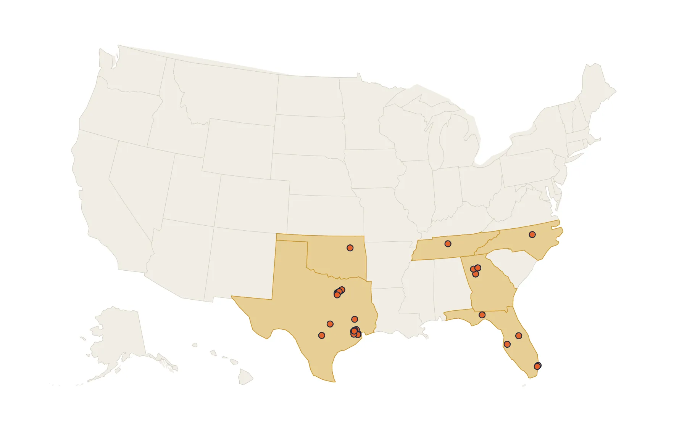
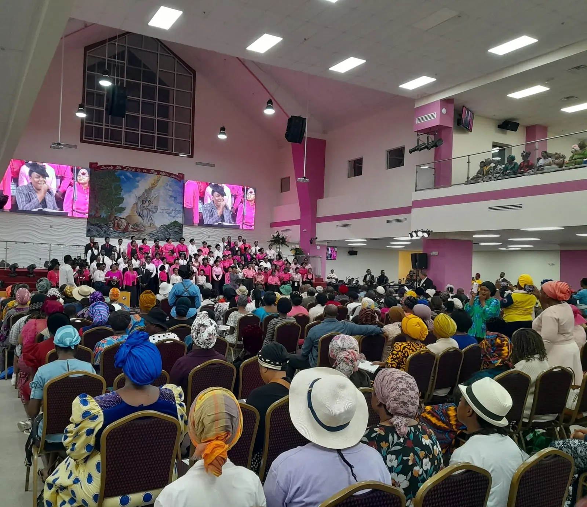
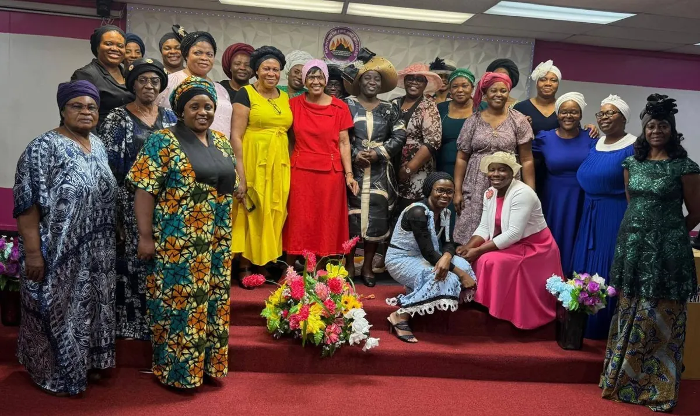
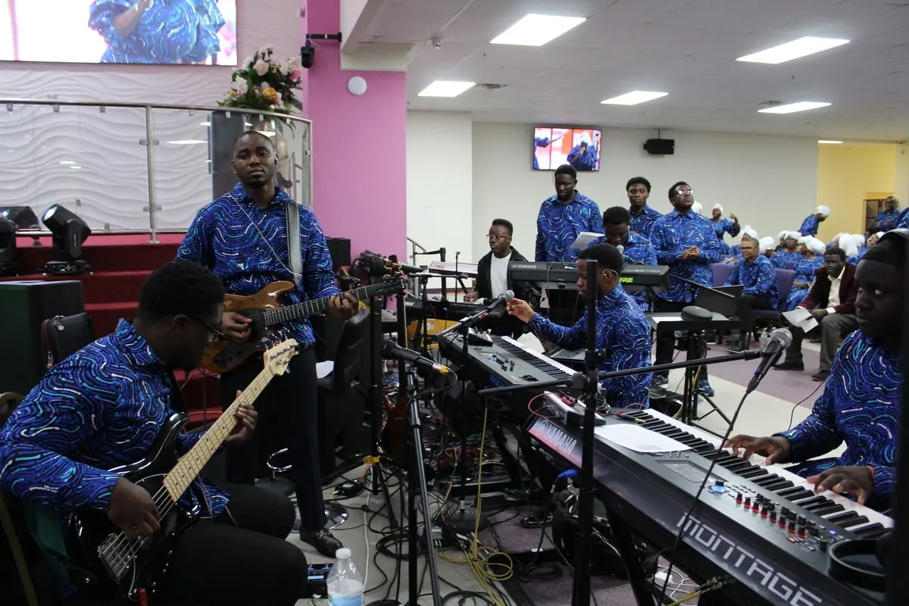
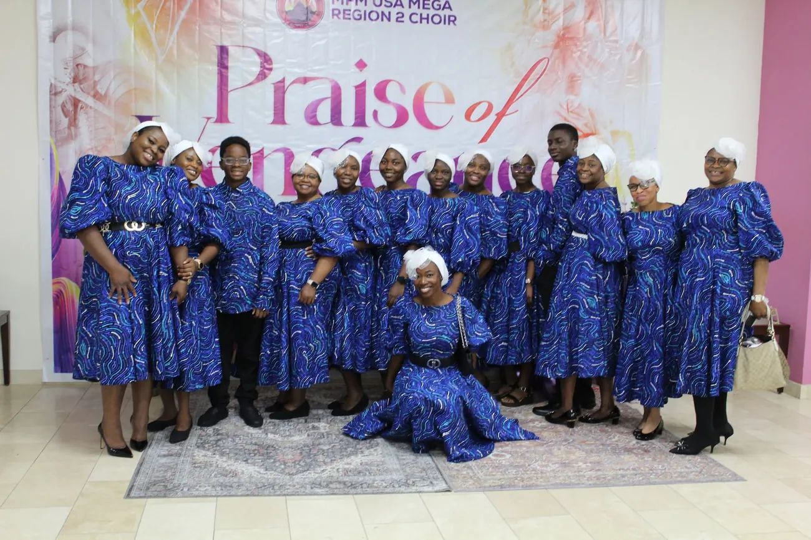
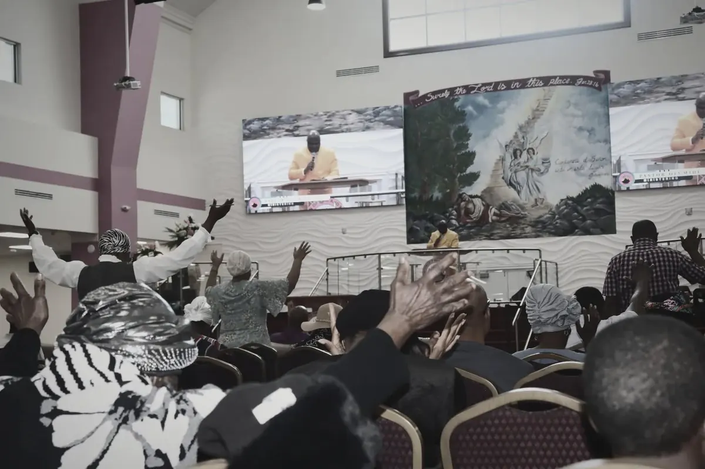
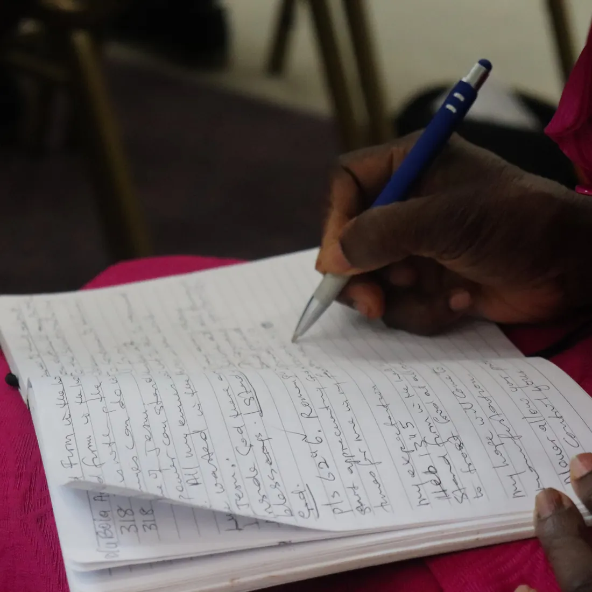
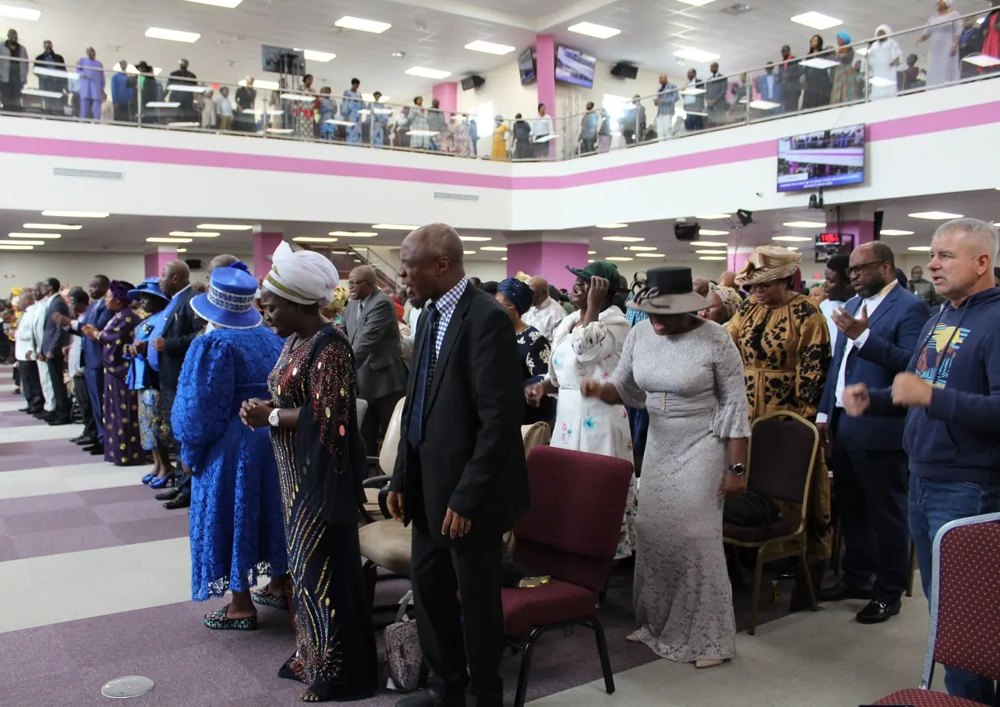

Mountain of Fire and Miracles Ministries
Come and encounter
the fire of God.
One regional family devoted to prayer, deliverance, the Word and the unlimited demonstration of the power of God.
Next regional gatheringOpen Heaven EncounterEvery Thursday · OnlineSee details
New Here?Plan your first visit
Find a Church33 branches + Youth Church · 6 states
WatchLive services and messages
Request PrayerConfidential prayer support
Your first visit
Come prepared. Leave transformed.
New to MFM Mega Region 2? Choose a location, review service information and know what to expect before you arrive.
What is happening now
Gather with expectation.
Regional programmes, crusades, conferences and ministry gatherings—all connected to full event details.
Loading gatherings…
Where the fire burns
Find an MFM church near you.
Search the complete verified directory, review service information and open a dedicated page for every branch.
Search all locations
6 states · 33 branches + Youth Church
Welcome to Mega Region 2
A regional altar. A family of faith.
Across Texas, Florida, Georgia, North Carolina, Oklahoma and Tennessee, our branches stand together in prayer, holiness, evangelism and deliverance.
Under the leadership of Pastor Olumide Oni and Pastor (Mrs.) Oluwatoyin Oni, the region serves people and families with the undiluted Word of God.
Discover our storyLife across the region
Worship. Prayer. The Word.
Real moments from across the region — worship, prayer, deliverance and the Word.


 View gallery ›
View gallery ›





Watch & grow
The Short Leg That Grew — God Still Heals | MFM Florida Crusade
Latest message
Watch latest videoReach out to us
How can the ministry assist you?
Prayer requests, testimonies, pastoral support and general messages all reach our regional team here. Send us a message and we will respond with care.
